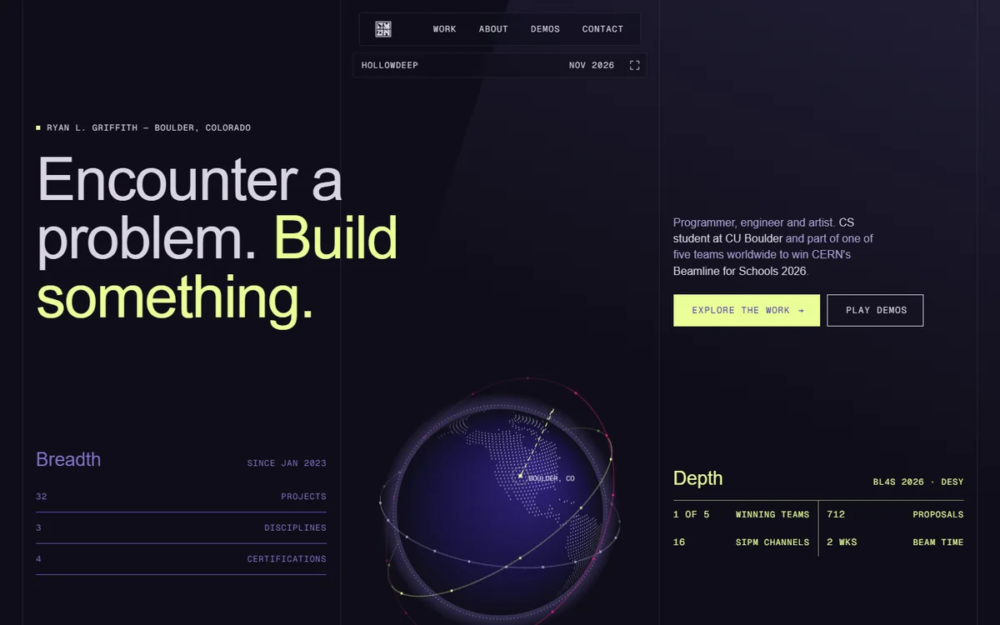
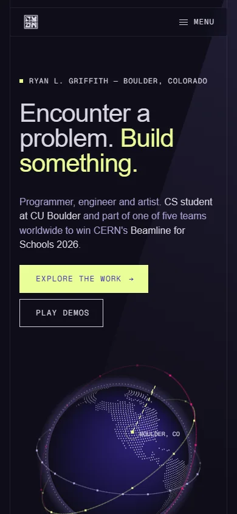
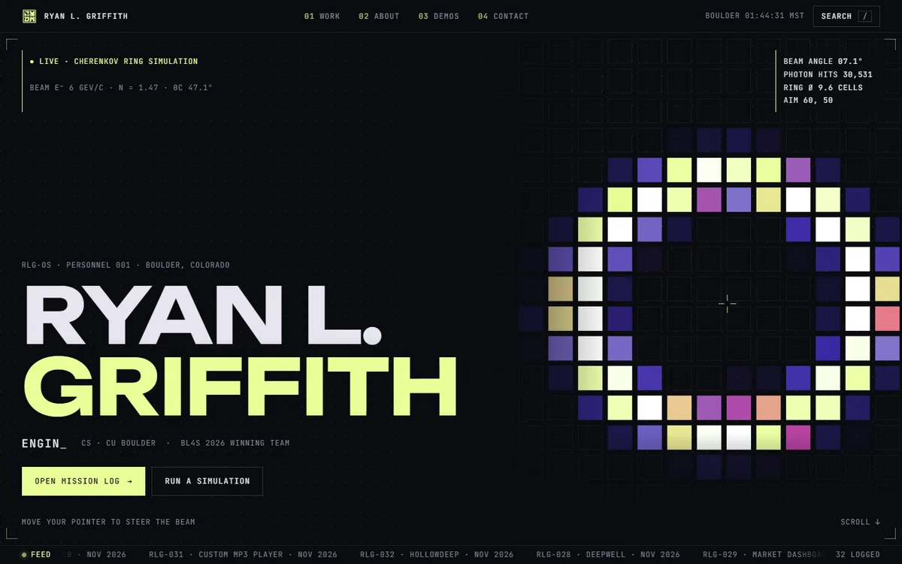
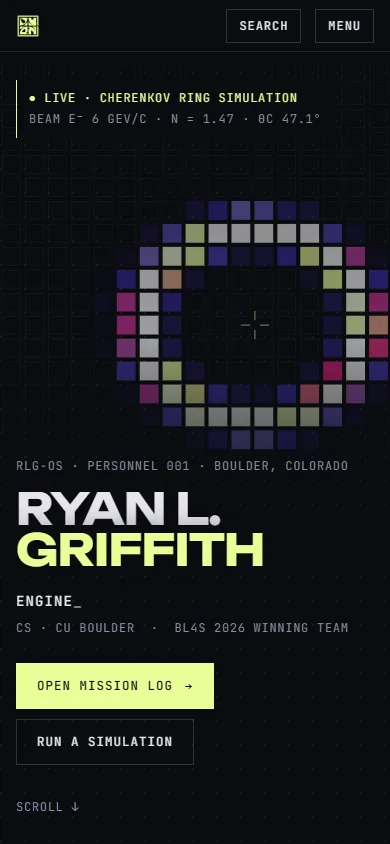
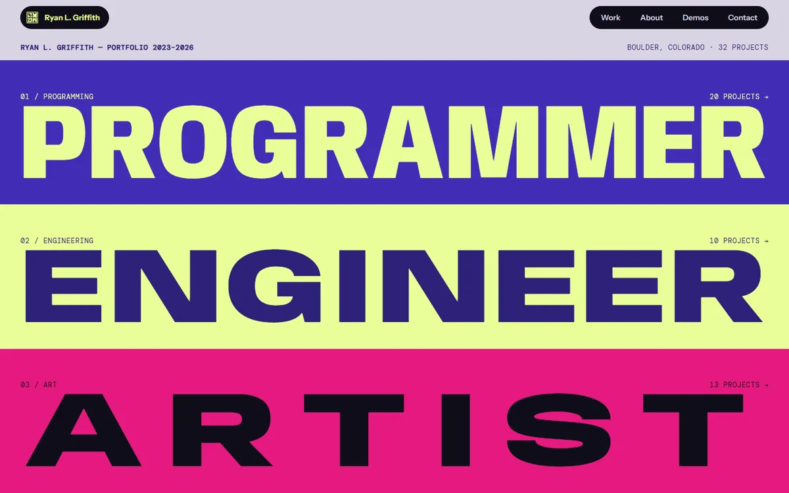
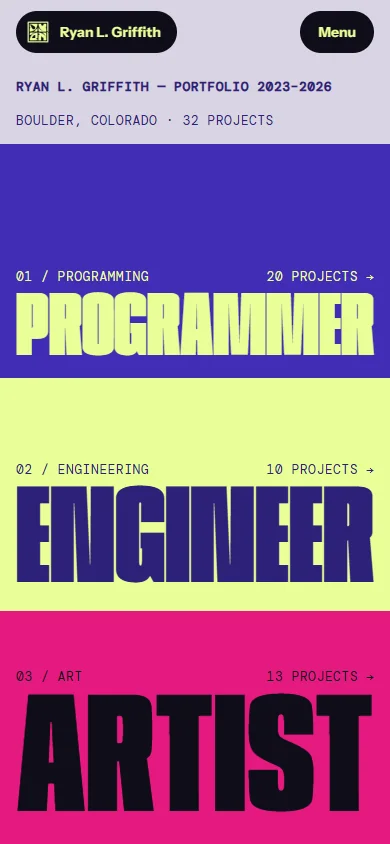

Prototype 01Indigo · Chartreuse · Space grey
Orbit
The closest to Albedo: a ruled three-column grid, a pill nav with a live status capsule, and a giant custom wordmark.


- Draggable dot globe with project orbits
- Boulder → DESY route and BL4S stats
- Albedo-style "values" grid that lights up
- Custom-drawn GRIFFITH wordmark in SVG
Prototype 02Void · Signal lime · Razzmatazz
Telemetry
Mission control. A live Cherenkov-ring detector simulation, a HUD frame, a command palette and a mission log.


- Pointer-steered detector, modelled on BL4S
- Press / to search everything
- Mission log with hover previews
- Boot sequence and live Boulder clock
Prototype 03Colour per discipline
Spectrum
A colour-block poster. Programming is indigo, engineering chartreuse and art pink, with type stretched to fill every block.


- Variable-width type fitted to each band
- Letters swell as the pointer gets close
- Sticky stacked deck of featured builds
- Duotone mosaic index, colour by discipline